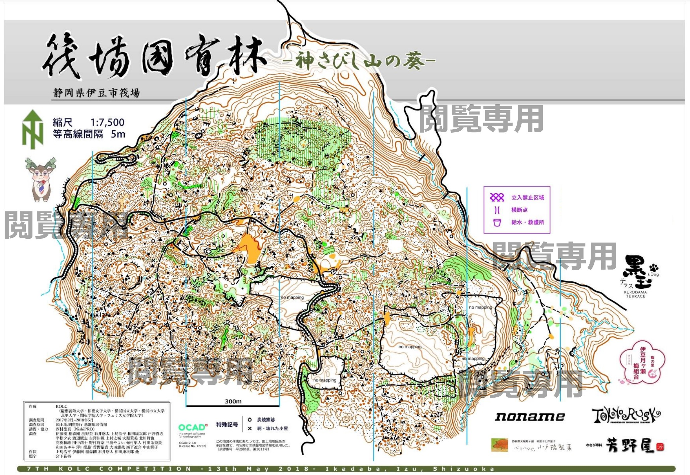
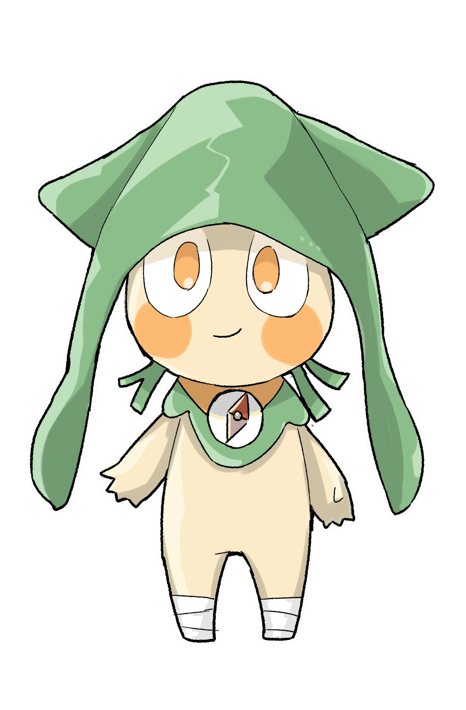

- 競技面の特徴
- 溶岩流により生成された片斜面の地形に、こぶ、岩石等の点状特徴物、礫地などが存在するテレインとなっています。
走行可能度の低下するエリアが多数存在するため、高度なナビゲーション能力と柔軟な対応力が求められます。 - 景観的特徴
- テレイン内の植生や地表面の様子、明るさ等がエリアによって目まぐるしく変化するため、競技中は移り変わりの激し
い幻想的な景観を楽しむことができます。 - 旧図
- 第７回KOLC大会にて使用された旧図です。




大会マスコットキャラクター
「イカずきんちゃん」
「いかだば」にちなんで、頭巾はイカがモチーフのいかずきんちゃん。筏場に住み始めてから、頭巾が筏場の苔色に染まった。足をひねらないように日ごろからテーピングで足をがちがちに固めている。首輪のコンパスは７回大会マスコット「わっさおさん」をリスペクト。かわいい顔して毒舌なのがチャームポイント。